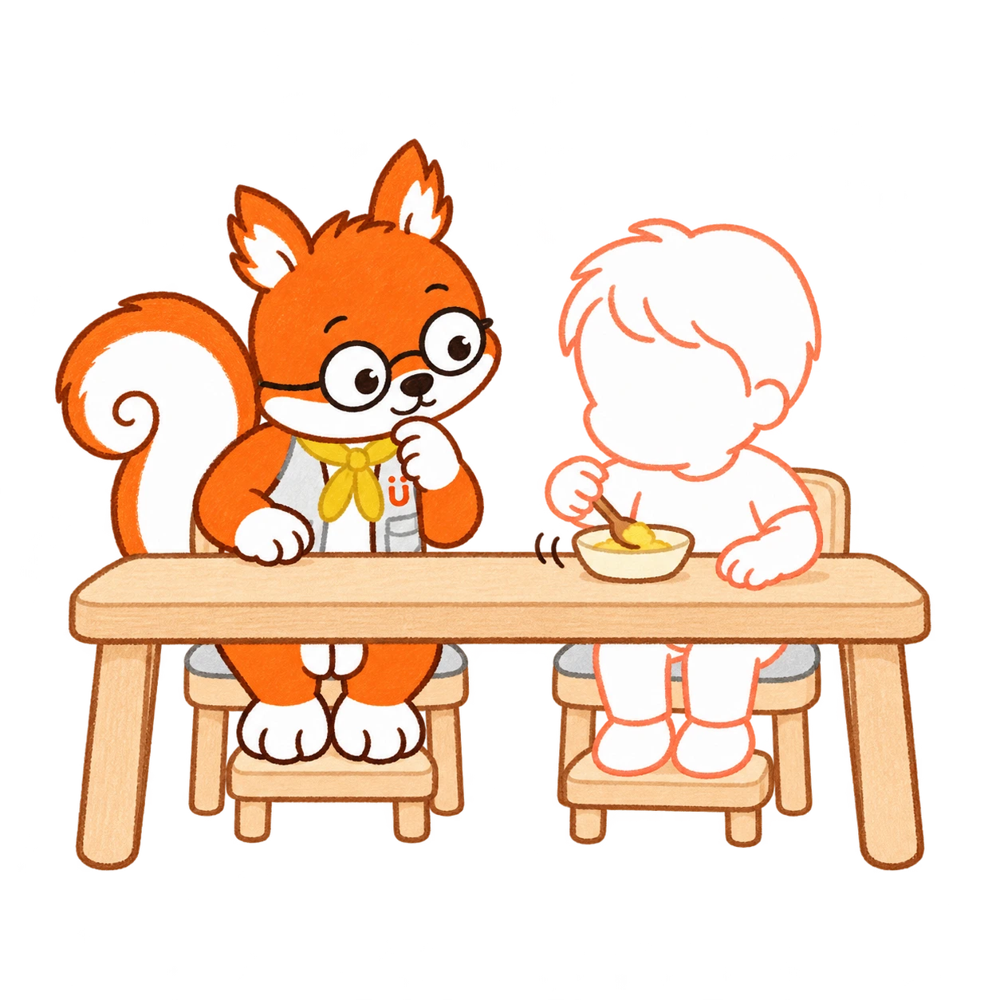
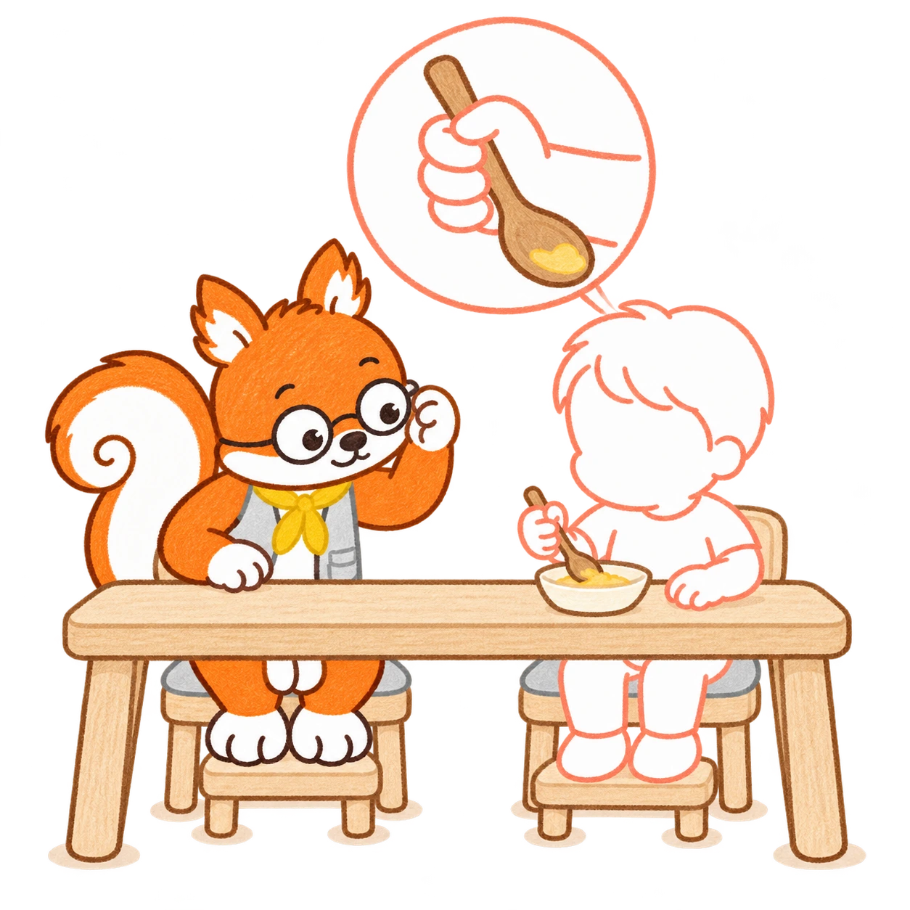
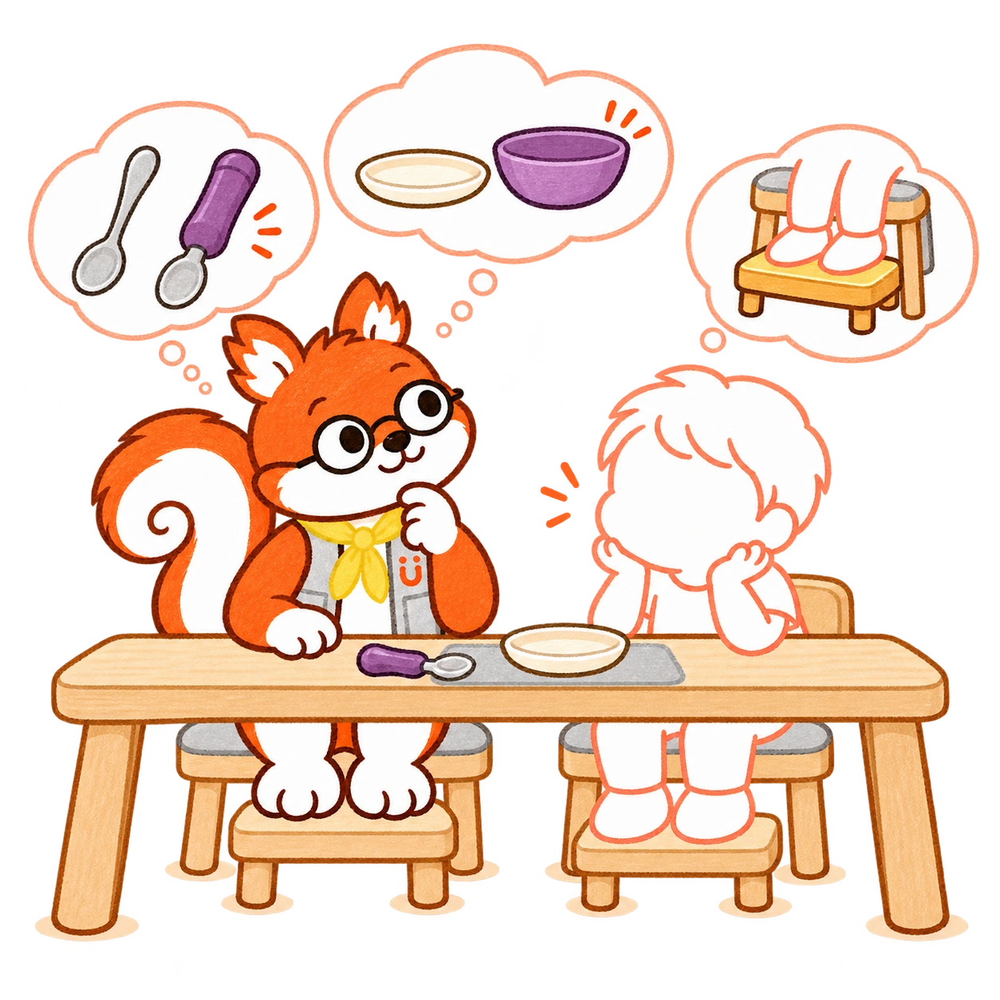
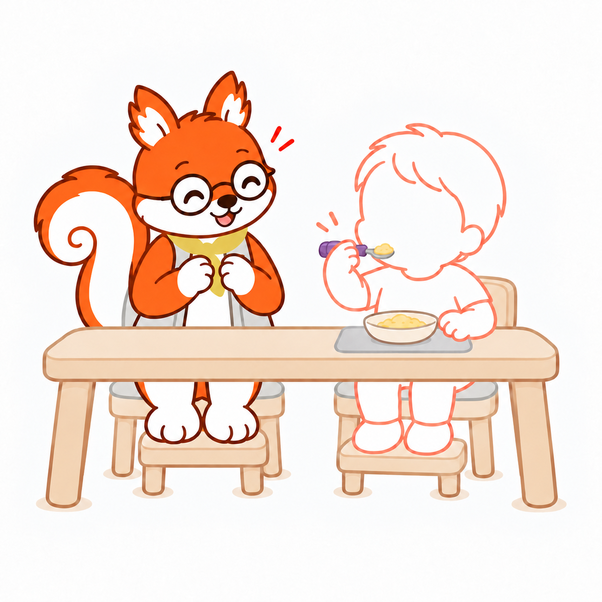
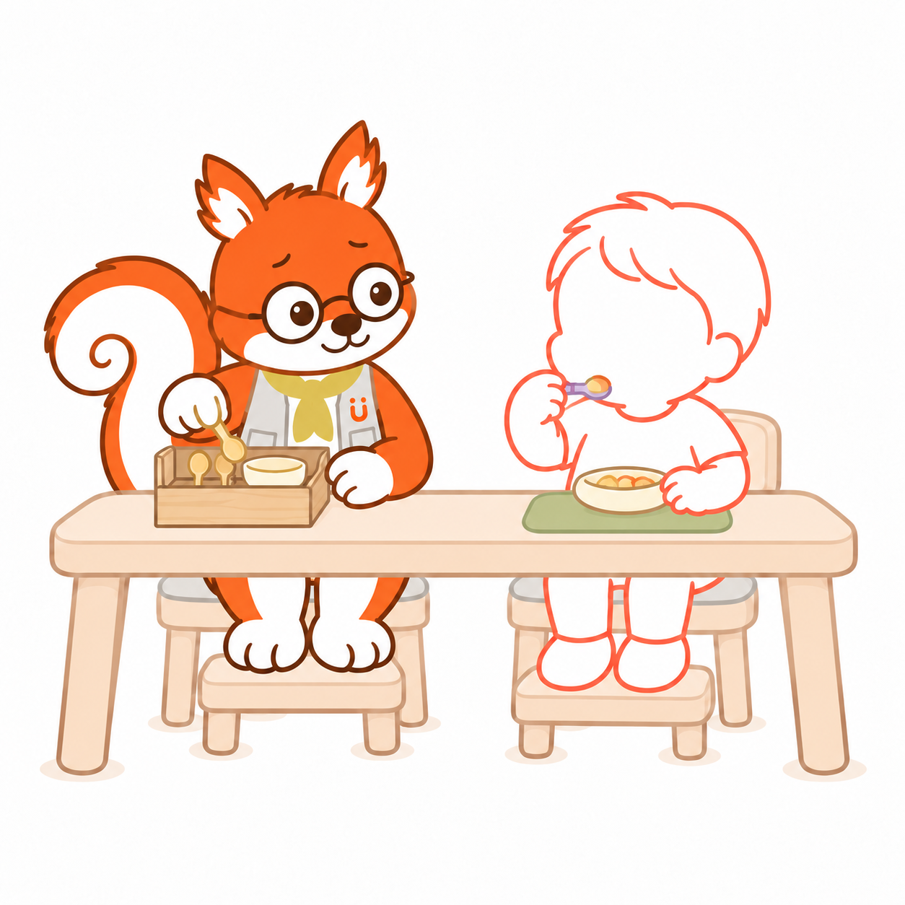
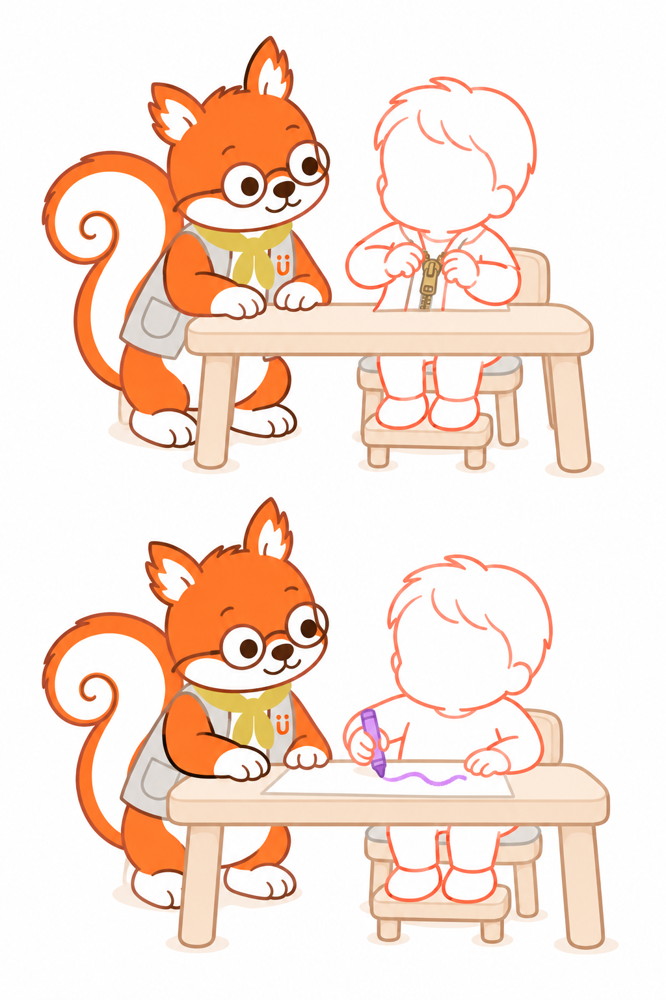
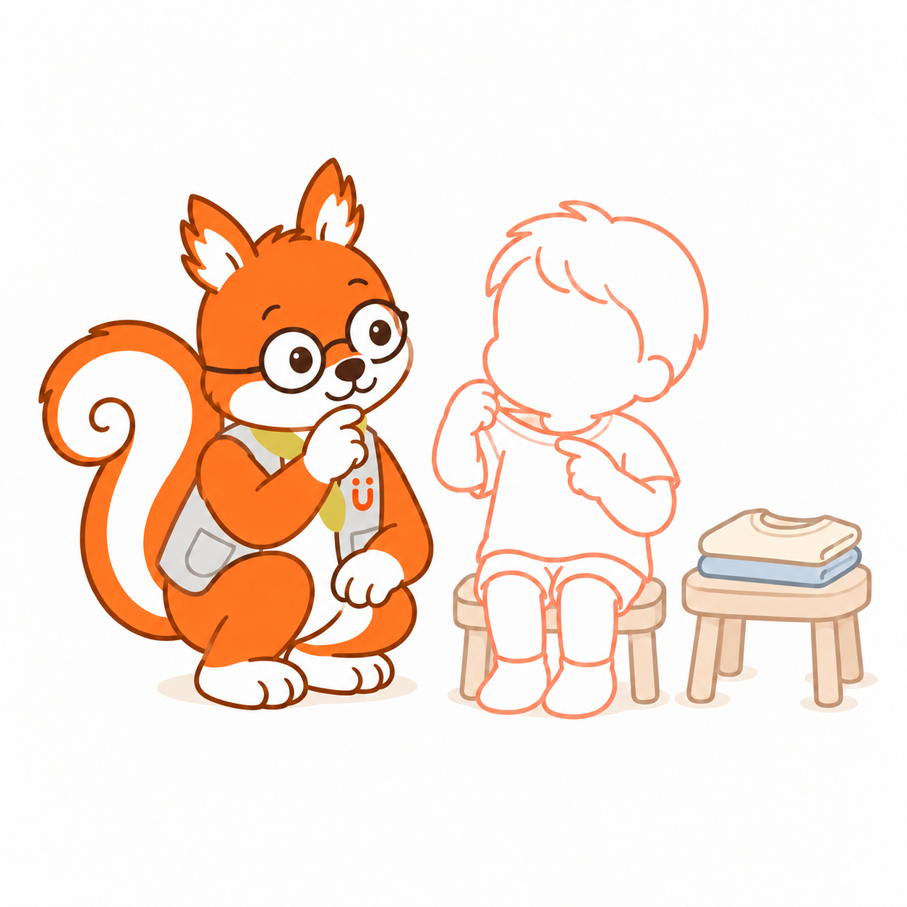

01
I wonder what I could make…
One block on top of another.
Hmm. What if I put this one here?
I love building things
and trying out ideas.

02
You reach for the spoon.
You try to scoop up a bite.
But the plate slides away.
this easier?

You try again.
There it goes—again!
I lean in for a closer look.
03
I watch your hand.
As you try again,
I watch how you hold the spoon
and move it across the plate.
the spoon?Is your hand
getting tired?

04
What else could help?
I look under the table.
Is your footrest at the right height?
Then back to that sliding plate…
comfortably?How could I keep
that plate still?
05
I’ve got a few ideas.
make it easier?

Let’s try a thicker spoon handle.
A shallow plate with a rim.
A mat to stop it sliding.
And let’s adjust your footrest, too.

06
Scoop… and in it goes!
You lift the spoon to your mouth.
I can’t help smiling.
Then you go back
for another spoonful.
07
Ooh, and what about this?
Another spoon! Another plate!
I’ve got so many ideas…
interrupt!

Oh. You’re busy eating.
I’ll put these away.
08
What else would you
like to try?
Doing up your jacket?
Drawing a picture?

Whenever you want to have a go,
I’m here to help.
09
The next day…
You’ve got your shirt on,
but you keep tugging at the collar.
I crouch down beside you.
“Is something bothering you?”
shirt feel better?

10
Let’s find what
works for you.
Something you’d like to do?
Something that doesn’t feel right?
We can work it out together.
A note for grown-ups
Small changes can make
everyday things easier.
Luke loves figuring things out. Drawing on occupational therapy, he looks for ways to make everyday activities easier and more comfortable. A different tool, a change in seating or a small adjustment to the surroundings may help. Then he watches to see what works for that child.
At mealtimes, he notices how a child grips the spoon and moves their fingers and wrist, whether they tire as they hold it, and how well their head and body are supported. He doesn’t judge their strength or development from a single moment.
Being able to do something doesn’t always mean it feels comfortable. A collar that scratches or a texture that feels unpleasant deserves attention, too.
“Doing it myself” doesn’t have to mean doing it without help. Luke is there to help children take part in the things they want to do, in a way that works for them.
References: NHS: Fine motor skills / Japanese Association of Occupational Therapists: Supporting children’s development (Japanese) / NHS: Using cutlery / NHS: Clothing sensitivities
HugMap Stories · Meet Luke